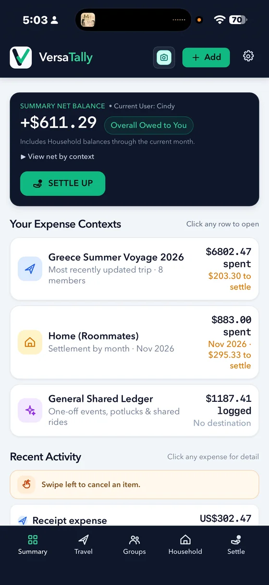
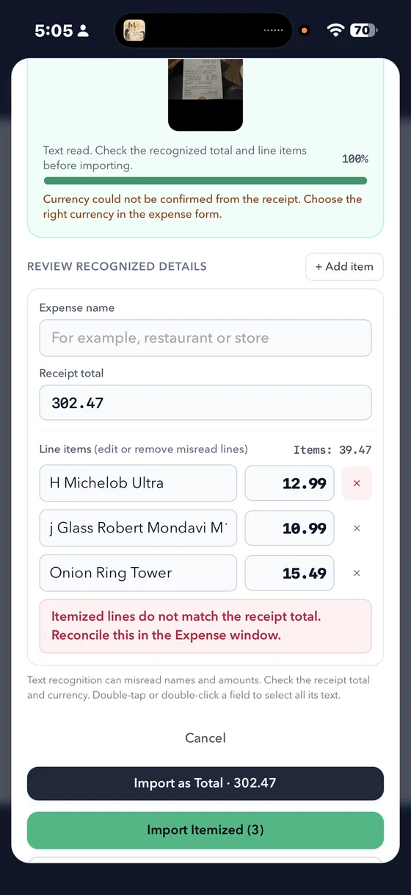
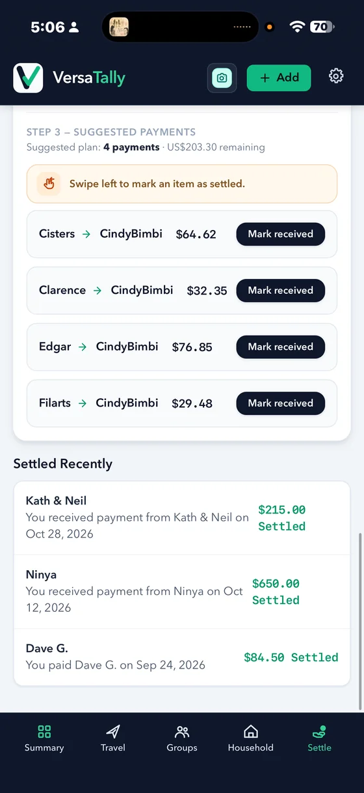
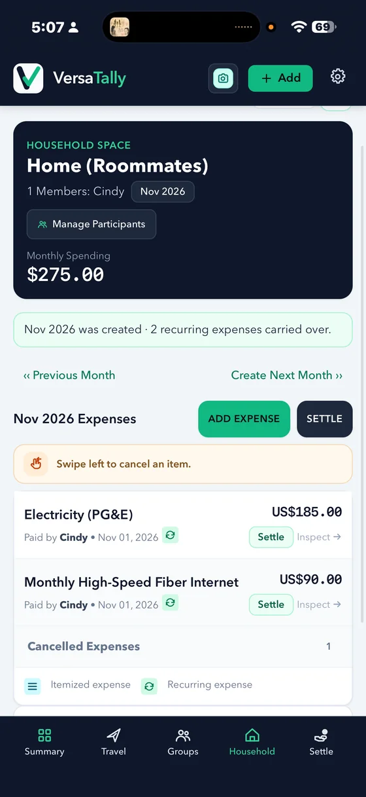

Capture the expense
Scan a receipt or enter the cost yourself. Review the recognized total and line items before importing them.
Shared expenses · Travel, home & everyday
Keep a trip’s costs, monthly household bills, and everyday group expenses organized in their own spaces. Review receipt details, choose how each cost is shared, and see what still needs to be settled.
VersaTally is in development. Public app downloads are not available yet.

A clearer way to share costs
Move from the purchase to the split without losing the details that explain who paid, who owes, and what has already been settled.
Scan a receipt or enter the cost yourself. Review the recognized total and line items before importing them.
Set who paid and who shares each expense. Divide costs equally, by a custom amount, or by percentage.
See balances in context and follow suggested payments. Record full or partial settlements as people pay.
Built around the way you share
VersaTally brings receipt details, flexible shares, and settlement tracking into one organized record.
Separate Travel, Household, and General expenses, so trip spending and recurring home bills have the right place.
Bring receipt totals and line items into the expense form. Check and edit recognized details before you save them.
Choose who paid and who owes. Assign people to itemized lines and support more than one payer on an expense.
Use an equal split, enter custom shares, or set percentages when everyone’s portion is different.
Review balances by context, use suggested payments to simplify who pays whom, and track partial or completed settlements.
Carry recurring household expenses into the next month, and record expenses in other currencies with their exchange-rate details.
Inside VersaTally
Explore the screens for summary balances, itemized receipt review, suggested payments, and monthly household expenses.



Screenshots show sample app data.
Designed with clarity in mind
See the amount, the people involved, the expense context, and its settlement status together. Keep the details close to the number, from receipt line items to payments already made.
VersaTally by VersaGal Digital
VersaTally is in development. Follow the feature overview here, or contact us with a question.